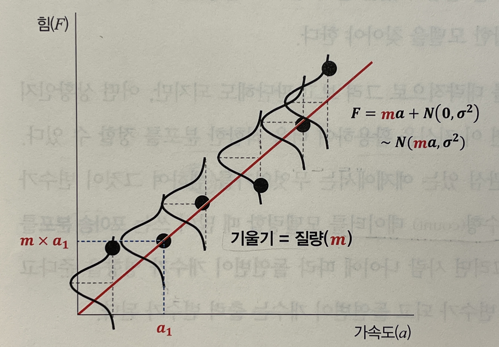

Summary
- 통계 분석은 변수 간 관련성의 통계적 유의성을 확인하고, 머신러닝은 새로운 값을 예측하는 데 집중한다.
- 모집단의 확률 분포를 가정할 때 가장 쉬운 시작점은 정규분포와 선형 관계이지만, 실제 데이터는 대부분 비선형이다.
- 확률론에 대한 사전 학습은 데이터에 적합한 확률분포를 선택하는 데 필수적이며 통계학의 기초가 된다.
들어가며
“통계학을 배우려는데 왜 확률론부터 공부하라고 할까?” 통계학에 입문할 때 흔히 드는 질문이다. 이 글은 통계학의 기본 구조인 기술 통계와 추론 통계에서 출발해, 왜 선형 모델이 첫 번째 시도가 되는지, 그리고 실제의 비선형 데이터를 다루려면 왜 확률론 지식이 필요한지를 순서대로 정리한다.
통계학의 두 기둥
통계학은 크게 기술 통계(Descriptive Statistics)와 추론 통계(Inferential Statistics)로 나뉜다. 두 갈래는 다루는 대상이 다르다.
- 기술 통계: 통계량(평균, 분산 등)을 통해 데이터의 특징을 분석한다.
- 추론 통계: 샘플 데이터의 특징을 통해 모집단의 분포를 추정한다.
이러한 통계학의 기본 구조를 이해하면, 왜 확률론이 필요한지 그리고 어떻게 데이터 분석에 활용하는지가 명확해진다.
통계학의 활용 — 선형 모델로 시작하기
정규분포와 선형 관계
통계 분석 관점에서는 데이터를 통해 두 변수 사이의 관계를 검증하거나 다른 변수를 예측하는 데 집중한다.
F=ma 예시를 생각해보자. 힘()에 따라 측정된 가속도() 값이 있을 때, 두 관점은 목표가 갈린다.
- 통계학적 관점: 두 변수(, ) 간 관련성이 통계적으로 유의한지 확인한다.
- 머신러닝 관점: 새로운 값을 예측한다.
이때 어떤 확률분포가 데이터를 가장 잘 설명할 수 있을지 결정해야 한다. 가장 쉬운 방법이 정규분포와 선형 관계다. 따라서 첫 번째로 시도해보는 것이 선형 모델이다.
선형 모델의 구조
선형 모델은 정규 분포를 따르는 오차()를 포함한다. 여기서 오차는 평균이 0, 분산이 인 정규분포 를 따른다.
F=ma 예시로 돌아가면 각 포인트는 평균 를 중심으로 분산 로 퍼져 있다. 입력 변수 를 통해 상수 을 학습하며, 출력 변수 는 입력 변수 에 따라 정규분포를 따른다.

그림. 선형 관계와 정규분포
- : 출력 변수(힘)
- : 입력 변수(가속도)
- : 학습 대상인 상수
- : 오차의 분산
선형 회귀 분석의 핵심은 입력 변수 에 상수 을 곱해 출력 변수 가 된다는 것을 학습하는 데 있다.
확률론의 필요성 — 실제 세계는 비선형
실제 세계에서는 데이터가 비선형적인 형태인 경우가 매우 많다. 통계 분석에서는 보유한 데이터의 형태에 따라 변수 간 관계가 얼마든지 다를 수 있다. 이를 보완하기 위해 확률론이 필요하다.
계수형 데이터 — 포아송 분포
돌연변이 개수의 합 예시를 생각해보자. 출력 변수는 한 세대에서 발생하는 돌연변이 개수의 합이며, 이는 계수형(count) 데이터에 해당한다.
기술 통계를 통해 데이터의 분포를 대략적으로 확인할 수 있지만, 사전 지식이 있다면 더욱 적합한 분포를 가정할 수 있다. 계수형 데이터를 모델링할 때는 주로 포아송 분포를 사용한다.
| 구분 | 내용 |
|---|---|
| 입력 변수 | 나이 |
| 출력 변수 | 돌연변이 개수의 합 |
| 분석 방법 | 포아송 회귀 분석 |
계수형 자료가 항상 포아송 분포는 아니다
무조건 계수형 자료가 포아송 분포를 따르는 것은 아니다. 음이항분포나 준포아송 분포 등 다양한 옵션이 존재한다.
적합한 확률분포 선택
상황에 따라 사용 가능한 분포의 형태가 다르기 때문에, 분포의 종류를 많이 알수록 데이터에 더 적합한 모델을 선택할 수 있다.
분석자는 여러 가능한 확률분포 옵션 중 가장 적합한 확률분포를 선택해야 한다. 이처럼 다양한 확률분포 지식을 습득하기 위해 통계학보다 확률론을 먼저 학습해야 한다.
통계학과 확률론의 관계
통계학과 확률론은 출발점과 방향이 서로 반대다. 아래 표가 그 차이를 정리한 것이다.
| 구분 | 통계학 | 확률론 |
|---|---|---|
| 시작점 | 데이터 (샘플) | 모집단 (확률분포) |
| 방향 | 샘플 → 모집단 추정 | 모집단 → 샘플 예측 |
| 목적 | 변수 간 관계 검증 | 확률분포 이해 |
| 핵심 질문 | 이 데이터의 관계가 유의미한가? | 이 분포에서 어떤 값이 나올까? |
| 실용성 | 의사결정, 가설검정 | 모델 선택, 예측 |
마치며
- 통계학은 확률론을 도구로 사용한다.
- 확률론 지식이 풍부할수록 더 적합한 통계 모델을 선택할 수 있다.
- 선형 모델은 시작점일 뿐이며, 실제로는 다양한 분포가 필요하다.
시리즈 네비게이션
- 다음 장: 2. 기초 통계량과 스케일링
Reference